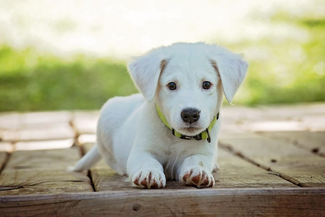

Um cachorro rápido, amigável e cheio de carinho.
Cachorro
Macho
1 ano
Médio
Max é um jovem cachorro muito sociável que adora companhia. Ele gosta de brincar com outros animais e está sempre disposto a receber carinho. É uma ótima opção para famílias que procuram um companheiro alegre e ativo.